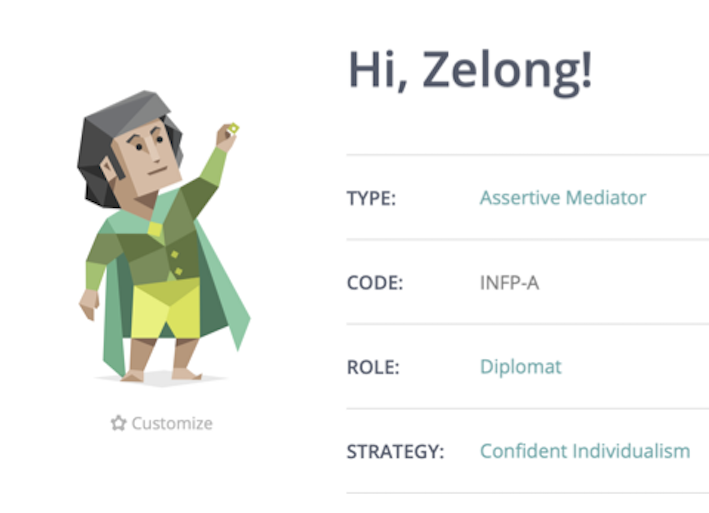
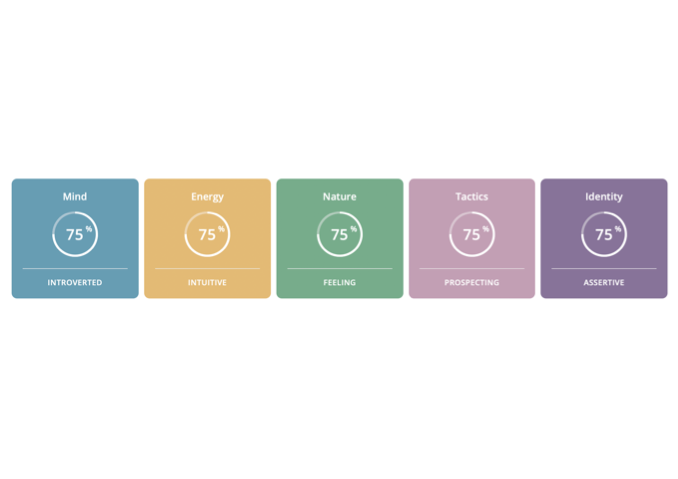

| My Profile | ||||||
|---|---|---|---|---|---|---|
| NAME: | Zelong Liu | English name: | Kerwin | Student ID: | S3794027 | |
| Birth: | 02/01/2001 | Country: | China | Education: | First-year University | |
| Sports: | Basketball | University: | RMIT | First Language: | Chinese(Mandarin) | |
| Hobby: | Collection of Sneakers | Pet: | Cat | E-Mails: | s3794027@student.rmit.edu.au | |
| Interest in IT: |
I am interested in artificial intelligence and network. I became interested in network when I was in primary school, because I like playing online computer game and often encounter hacker player. Morever, interesting in artificial intelligence cause my uncle gives me the idea. His job is relate to IT and tells me AI wii be popular. Because I got an offer of foundation from RMIT University and graduated. I hope I can learn some practical knowledge to help in my future work. |
|||||
| Ideal Job: |
My idea job is to work in Tencent as a techincal operator. What attract me to this jobe is that being an operator in an Internet giant is a very capable job and it also proves that I have the ability to make dicisions and lead the team. This job requires mastery of computer network architecture and common programming language such as C++, PYTHON, PHP, SHELL... I currently don't have enough the skills, qualifications or experience to apply for this job. So I need to learn the basic computer network architeture and programming language during my university years. And then learn how to use those skills better during the internship. Job advertisement :https://join.qq.com/index.html | |||||
| Personal Profile: |
 Weaknesses In the personal growth test, the results show that my mind is introverted. Introverted individuals prefer solitary activities and get exhausted by social interaction. They tend to be quite sensitive to external stimulation in general. This is exactly my weakness which will affect my cooperation with colleagues in the future work. It's hard for me to get out of my circle and make new friends. This will make me worry about how to better complete my teamwork in the future. Strengths In the test I think intuitive, feeling, prospecting, assertive are my strength. These characters will be of great help to me in my future work. Intuitive individuals are very imaginative, open-minded and curious. They prefer novelty over stability and focus on hidden meanings and future possibilities.This kind of personality can help me put forward many good ideas in future team discussions, and even bold ideas can lead a team better.Feeling individuals are sensitive and emotionally expressive. They are more empathic and less competitive than Thinking types, and focus on social harmony and cooperation. It helps me get along well with my colleagues and build good relationships. Prospecting individuals are very good at improvising and spotting opportunities. They tend to be flexible, relaxed nonconformists who prefer keeping their options open. Although there are good and bad, I think randomness is a good state of mind, and it is easier to find new ideas if you keep calm often. The test says assertive individuals are self-assured, even-tempered and resistant to stress. They refuse to worry too much and do not push themselves too hard when it comes to achieving goals.  | |||||
| Project Idea: |
My project idea is to create a credit card fraud detection system. It will be an IT project involving big data analysis, artificial intelligence and computer algorithms.The main characteristics of credit card fraud are constructed by computer programming and mathematical model, and the machine learning method is applied to automatically identify the suspected stolen credit card transactions. Finally, the intelligent program for real-time monitoring of credit card fraud is generated. The risk of stealing credit card has become one of the difficult problems in credit card departments of banks all over the world. In the United States alone, for example, the Federal Reserve's payment survey reported that in 2012, the total amount of credit card payments in the United States reached 26 billion dollars, of which the amount of unauthorized credit card payments, that is, the amount of stolen credit cards was 6.1 billion dollars. Measuring the risk of credit card transactions involves a complex array of technologies, ranging from finance to economics to law to information science. Traditional credit card swiping detection requires a lot of human effort, with a human auditor calling to determine if the transaction is suspected of credit card theft. Now, as transactions surge, credit card departments of major banks are relying on big data and using machine learning and cloud computing methods to quickly identify suspected credit card transactions. Credit card payment is a common way of payment in our daily life. Of course, there will be fraud (credit card theft). If machine learning can be used to complete the prediction of fraud, it will help card issuers to realize anti-fraud and protect the security of cardholders' property.Traditional credit card detection requires a lot of human involvement in analyzing huge amounts of data, and the algorithm alerts only one transaction before a human reviewer calls to determine if the transaction is suspected of credit card theft. Now, as transactions surge, credit card departments of major banks are relying on big data and using machine learning and cloud computing methods to quickly identify unauthorized credit card transactions. Machine learning algorithms used to detect credit cards will first be trained on massive amounts of normal transaction data and cardholder data. Transaction results -- a normal person might buy electricity once a week, go to the shopping mall once every two weeks, and so on -- would become an important dimension in the machine's understanding of transactions. These transaction results would become models for normal transactions. Next, the machine is tested with real-time transaction data and given a probability of whether the transaction is illegal, say, 97 percent. If the detection system sets the probability of each transaction not being illegal to be higher than 95 percent, then all those transactions will be denied payment. In other words, the transaction will not succeed. This algorithm takes into account many factors, including the trust of the card swiping supplier, the purchase behavior of card insertion (space-time dimension), IP address, etc. The more factors it considers, the more accurate the model it builds. The process of detection is almost real time, which is also a human worker can not achieve detection speed. If this project is successful it means credit card users around the world are protected.
| |||||